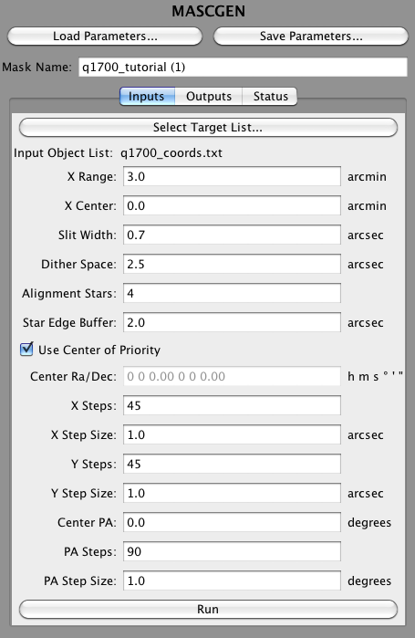

MASCGEN Inputs
Mask Configurations must be given a unique name. Enter this into the box near the top of the MASCGEN panel. It can be changed later in the Mask Configurations Panel (see Managing Mask Configurations.
The rest of the MASCGEN inputs are specified on the Inputs tab (see image below).
In addition to the target list, the following arguments are used by MASCGEN:
- X Range: the width of the region in arcminutes, centered around the center of the CSU and offset by X Center argument below, that slits are allowed to be in. This is to prevent slits from falling near the edge of the field of view, where their spectral coverage will be limited.
- X Center: the offset from the center of the CSU field of view the region in which slits may be placed is centered on. This is used to shift the entire set of slits in order to shift the spectra on the detector, if, for example, a specific wavelength is desired.
- Slit Width: the width of all slits in arcseconds.
- Dither Space: the minimum distance from the top and bottom of a slit a object must be in order to be considered valid. This is to allow for dithering on the slit.
- Alignment Stars: the number of alignment stars within the MOSFIRE focal plane for the same pointing of the mask to be considered valid.
- Star Edge Buffer: the minimum distance in arcseconds that an alignment star can be from the edge of the alignment box.
- Use Center of Priority: if this is checked, the center of priority, calculated from the list of targets, will be used as the starting point for dithering. If checked, the Center Ra/Dec field below is ignored.
- Center Ra/Dec: the starting center point for dithering.
- X Steps: the number of steps in X on both sides of the center point to dither. X here means in the same direction as spectra lie on the detector, which is also the same direction as the bars move.
- X Step Size: the size of the X steps in arcseconds.
- Y Steps: the number of steps in Y on both sides of the center point to dither. Y is perpendicular to the direction the spectra lie on the detector, and the direction the bars move.
- Y Step Size: the size of the Y steps in arcseconds.
- Center PA: the starting position angle of the mask.
- PA Steps: the number of increments on each side of the starting PA to search.
- PA Step Size: the size of the PA steps in degrees.
